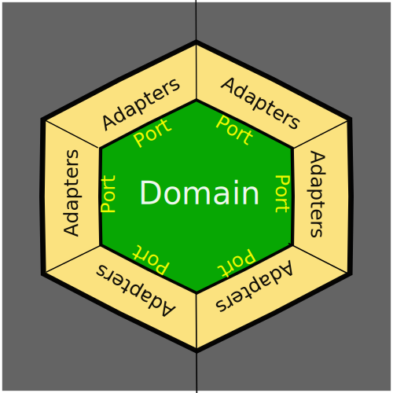

Domain Driven Design
Presented by J. Reuben Wetherbee / @jrweth
About Me
- email: wetherbe@sas.upenn.edu
- twitter: @jrweth
- School of Arts and Sciences Institutional Reporting and Development (IRAD)
- Started working for Penn in 1993/1999
- 4 kids aged 9, 11, 13 and 15
Acknowledgements
Based on talk by Jeremy Cook at Confoo Conference 2015.
Designing a Web Application
E.G: Banking Application
- Symfony2 PHP MVC Framework
- Doctrine ORM
- Oracle DB
- Symfony Bundle for UI
- Sumfony Bundle for API
- Bootstrap/Jquery
Cart Before the Horse
Technolgy Driven Development
Choose which technology you are using, and then fit your domain logic into it.
vs
Domain Driven Development
Develop your domain logic, and then create an interface for your technology to interact with it.
Designing a Web Application
E.G: Banking Application
- Symfony2 PHP MVC Framework
- Doctrine ORM
- Oracle DB
- Symfony Bundle for UI
- Sumfony Bundle for API
- Bootstrap/Jquery
- Customers
- Accounts
- Currency
- Transfers
- Accruals
- Withdrawals
MVC To The Rescue!
Wikipedia Defined MVC

Traditional MVC in practice

Traditional MVC Example
Typical Web Backend MVC

Angular MVC

Which MVC?
Where is the Domain?
MVC Semantic diffusion (Martin Fowler)
Anemic Domain Model (Martin Fowler)
Domain Driven Design Architecture:
Decouple Types of Logic
- Domain Logic (M)
- Application Logic (C)
- Presentation Logic (V)
- Accounts, Withdrawals, Customer...
- Routes, HTTP Request/Response, DBs
- Javascript, CSS, HTML
Hexagonal Architecture
Developed by Alistair Cockburn
Hexagonal Architecture
Domain Ports and Adapters
Ports and Adapters Example
Banking
Ports and Adapters in MVC
Ports and Adapters Advantages
- Domain logic restricted to Domain
- Can swap out adapters
- Can Develop Domain Code before Application Adapter code
- Upgrading/Changing Frameworks? Just Change Adapters
What is a Domain?
- Entities
- Aggregates
- Value Objects
- Services
- Events
What is a Domain: Entities
- Represents a concept in your domain (think nouns)
- Each entity instance must be unique and identifiable
- Beware the "Anemic" Domain Model
What is a Domain: Aggregates
- A collection of entities contained by another entity (e.g Order and Order Items)
- Containing Entity is the Aggregate Root
- Child Instances can only be accessed via the aggregate root
What is a Domain: Value Objects
- Used when you only care about the attributes and logic of the concept
- Immutable (side effect free)
- Replacements for Simple Types
- E.G. Currency
What is wrong with Simple Types?
class Person {
public function __construct(String $firstName, String $lastName) {
//Code here
}
}
$person = new Person('Cook', 'Jeremy'); //WHOOPS!!Why Value Objects are better than Simple Types
<?php class FirstName{
public function __construct($firstName)) {//Code here}
}
class LastName{
public function __construct($LastName)) {//Code here}
}
class Person{
public function __construct(FirstName $firstName, LastName $lastName)) {//Code here}
}
$person = new Person(new LastName('Cook'), new FirstName('Jeremy')); //Throws Exception
$person = new Person(new FirstName('Jeremy'), new LastName('Cook')); //Yeah!
What is a Domain: Services
- Models a domain concept that does not conceptually belong to an entity or value object
- Stateless
- Defined in terms of the domain model
class MoneyTransfer {
public static function transferBetweenAccounts(Account $from, Account $to, Money $amount) {
$from->debitForTransfer($money, $to);
$to->creditFromTransfer($money, $from);
}
}
//In the application service...
$from = $accountRepository->findByAccNumber('123456');
$to = $accountRepository->findByAccNumber('123457');
$money = new Money('100', new Currency('CAD'));
MoneyTransfer::transferBetweenAccounts($from, $to, $money);What is a Domain: Events
- Allows a domain to signal that something has happened
- Allows cross domain information to be accessed
MoneyTransfer::transferBetweenAccounts($from, $to, $money);
$event = EventFactory::createEventForSuccessfulAccountTransfer($from, $to, $money);
$eventType = EventTypes::SUCCESSFUL_MONEY_TRANSFER;
$eventDispatcher->raiseEvent($ventType, $event);